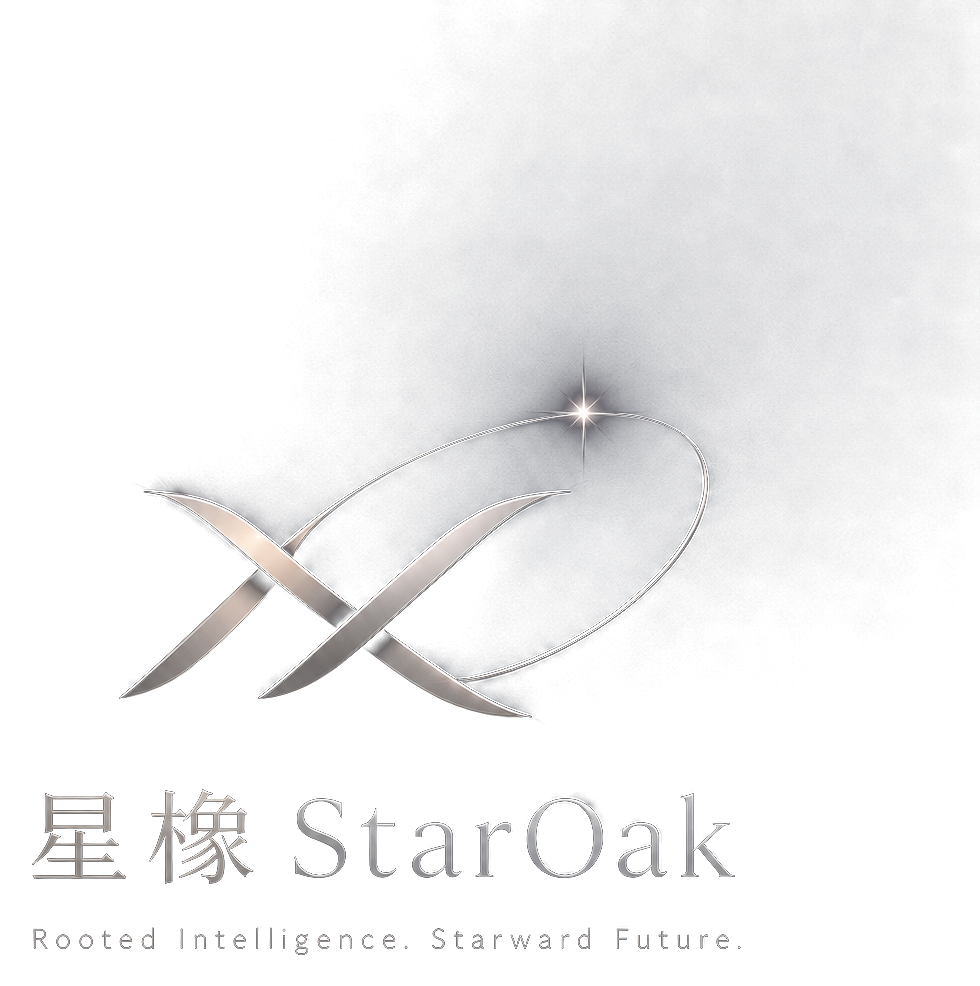

AI引擎
模型、数据、智能体、流程自动化与可信治理。

生态合作StarOak Industrial Holdings
星橡以 AI 引擎为核心能力，连接量化研究、企业获客、全球增长服务与产业生态协同，构建面向未来的智能产业控股平台。
Identity
以 AI 引擎为根能力，围绕产业场景、增长服务、量化研究与生态合作推进智能产业布局。
AI Engine
首期重点呈现 AI 引擎、AI量化交易、AI获客与 AI驱动型企业全球增长服务平台。
模型、数据、智能体、流程自动化与可信治理。
技术研究、策略辅助、风险控制与系统能力探索。
客户洞察、线索识别、内容生成与销售协同。
星橡参股联合打造的产业服务抓手。
Industry Layout
相关内容仅用于技术能力、研究方向与系统能力探索说明，不构成任何投资建议、收益承诺、金融产品推介或交易邀约。
面向企业全球化增长需求，整合 AI 获客、市场洞察、渠道触达和线索管理。
StarOak Intelligence
以研究与洞察连接技术、产业、资本与增长。
Cooperation